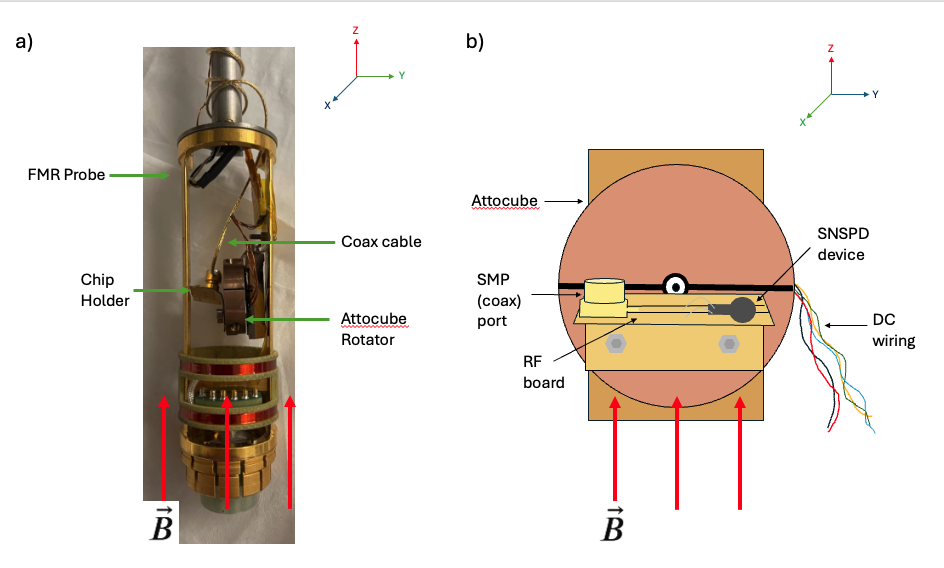

Abstract
Angle-resolved characterization of a NbTiN superconducting nanowire single-photon detector (SNSPD) was under magnetic fields up to 14 T, enabled by continuous in-situ angle control via a cryogenic piezoelectric rotator. By measuring the switching current in the dark as a function of field magnitude and orientation, a strongly anisotropic critical-field response is identified, well described by the Tinkham anisotropic thin-film model, alongside a distinct low-field crossover in the perpendicular-field response. Together, these results establish a practical high-field operating envelope for SNSPDs and motivate applications ranging from dark-count-mechanism studies to high-field quantum sensor readout.
Objective
To characterize the dependence of an SNSPD's dark-count rate and switching current as a function of the magnitude and orientation of an applied magnetic field up to 14 T. This precise profiling aims to define the stable operational boundaries necessary for deploying these sensors in extreme magnetic environments, ensuring reliable readout performance for advanced quantum measurements.
Methodology
Cryogenic Measurement Setup:
- The device was mounted on an attocube cryogenic piezoelectric rotator to sweep the angle (θ) between the applied field and the sample plane continuously in situ (θ=90° is out-of-plane; θ=0° is in-plane) across fields up to 14 T.
- Switching current (Isw), and Dark Count Rates (DCR) measurements were conducted at 4 K and 6 K at each angle.

a) Side view of the experimental setup of the device in the cryostat probe. b) Front view of the sample stage (RF board + attocube). The SNSPD device is mounted on a custom gold plated RF board which is then screwed on the attocube rotator. The attocube rotator is fixed to the probe. The magnetic field points in the Z direction as denoted by the red arrows in both images.
Results and Discussion
Note: As this project is currently under development, this section summarizes the work done so far.
- A strongly anisotropic response was demonstrated through the Tinkham anisotropic fit to Bc(θ) at 4 K, matching expectations for a thin-film device with a large in-plane/out-of-plane aspect ratio.
- The ~5 µA level was identified as the physically meaningful dark-count-free boundary, below which dark counts disappear entirely, establishing Isw as the operative observable without requiring a separate dark-count-rate dataset.
- The low-field kink in the perpendicular response was successfully captured using the two-regime (linear / inverse power-law) fit, locating the breakpoint quantitatively rather than by eye.
- Preliminary 6 K data was collected, setting the stage for formal temperature-dependence analysis pending planned millikelvin measurements.
Conclusion
- Stable, continuously angle-resolved SNSPD operation in magnetic fields up to 14 T was demonstrated, with a critical-field anisotropy accurately described by established theoretical models rather than requiring a custom approach.
- A high-field operating envelope was established that enables future efforts to disentangle specific microscopic dark-count mechanisms once complete temperature-dependent data is obtained.
- This work paves the way for applying this detector platform to high-field readout contexts, directly supporting advancements in experiments such as dark-matter, nuclear physics and fundamental physics under high magnetic field.